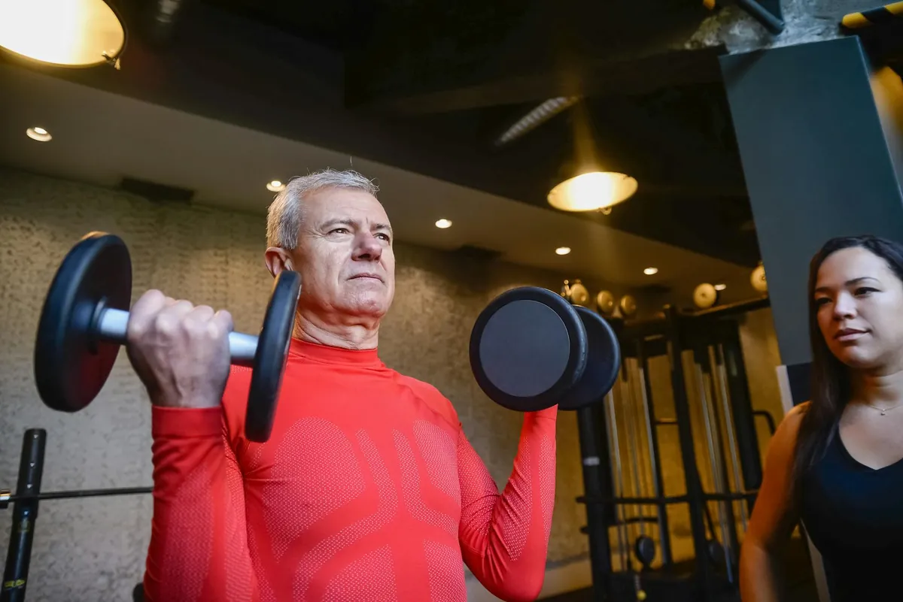

Age Stronger: Science-Backed Strength Routines for Lasting Independence
Key takeaways
- Consistent daily action.
- Evidence-informed choices.
- Sustainable progress.

I remember that moment clearly. I was trying to lift a heavy box of holiday decorations, and my back just… gave out. It wasn't just the pain; it was the sheer panic that washed over me. What if I couldn’t do things for myself anymore? That feeling of losing control, of becoming dependent, scared me more than I cared to admit. It was a wake-up call that I needed to get serious about building and maintaining my strength, not just for vanity, but for my independence.
For so long, I thought strength training was just for young athletes or bodybuilders. My doctors would mention it, but it always felt like something I’d get around to *later*. Later never really came, and my body started reminding me that later was now. The good news? It’s never too late to start, and the benefits for aging stronger are incredible.
You're too old to build muscle, and trying will just lead to injury.
Our bodies are remarkably adaptable at any age. With the right approach, strength training actually *reduces* your risk of injury and is key to maintaining mobility and independence. It's about smart, progressive training, not just lifting heavy weights.
Building strength isn't just about looking good; it's about feeling capable. It means being able to carry your groceries without struggling, playing with your grandkids without worrying about your knees, and simply having the energy to enjoy your life. I’ve found that focusing on functional movements – those that mimic everyday activities – makes the biggest difference.
Think about what you do every day: sitting up, standing, walking, reaching, lifting. These are all powered by strength. As we age, we naturally lose muscle mass, a process called sarcopenia. But the good news is, we can combat this loss and even reverse it with consistent resistance training. This is crucial for maintaining balance, preventing falls, and keeping our metabolism humming.
The 2-Minute Win
Stand up right now and do 10 chair squats. That’s it! Just stand up from your chair and sit back down, 10 times. This simple movement engages your legs and glutes, two of the largest muscle groups in your body. You can do this multiple times a day.
When I first started, I was intimidated. The gym felt like a foreign land. So, I began at home with bodyweight exercises. Squats, lunges, push-ups against a wall, and planks were my initial go-to’s. These are fantastic for building a foundation. You can find tons of great resources for related healthy tips and home workout routines online.
Pro-Tip: Focus on Form, Not Weight
When you’re starting out, or even when you’re seasoned, always prioritize proper form over how much weight you’re lifting or how many reps you’re doing. Watching yourself in a mirror or even recording yourself can help you spot and correct mistakes before they lead to injury. It’s better to do 5 perfect reps than 10 sloppy ones.
As I got stronger, I incorporated resistance bands and then light dumbbells. The key is progressive overload – gradually increasing the challenge to your muscles. This could mean adding a little more weight, doing an extra rep or set, or decreasing rest time. Consistency is more important than intensity when you're first building the habit. You can explore another practical guide on how to structure your workouts.
Don't forget about your core! A strong core is the powerhouse for almost everything you do. Planks, bird-dogs, and dead bugs are excellent for building core stability, which is vital for preventing back pain and improving posture. A strong core supports your spine and makes everyday movements feel easier. This ties into overall similar wellness insights that promote better movement.
Nutrition plays a huge role too. Making sure you get enough protein is essential for muscle repair and growth. I’ve learned to incorporate protein sources into every meal. Think lean meats, fish, eggs, dairy, legumes, and even protein powders if needed. Pairing this with adequate hydration is key for recovery and energy levels.
Listen to your body. Rest and recovery are just as important as the workouts themselves. Sleep is when your muscles repair and grow. If you’re feeling unusually sore or fatigued, it’s okay to take an extra rest day. Pushing through constant pain is counterproductive and can lead to burnout or injury. Finding a sustainable routine is key to staying consistent with this.
Here’s a simple checklist to get you started:
Your Strength Starter Pack
- Assess: What everyday tasks feel difficult? Start there.
- Start Small: Choose 2-3 exercises you can do safely (e.g., chair squats, wall push-ups).
- Schedule It: Aim for 2-3 strength sessions per week, even if they're short.
- Focus on Form: Watch videos, use a mirror, or get a session with a trainer if possible.
- Be Patient: Progress takes time. Celebrate small wins!
Building strength as you age is an investment in your future self. It’s about preserving your ability to live life on your terms, with energy and confidence. It’s a journey I’m still on, and I’m committed to aging stronger, stronger every day. For more on this topic, you can explore more longevity guides.
Educational only — not medical advice.